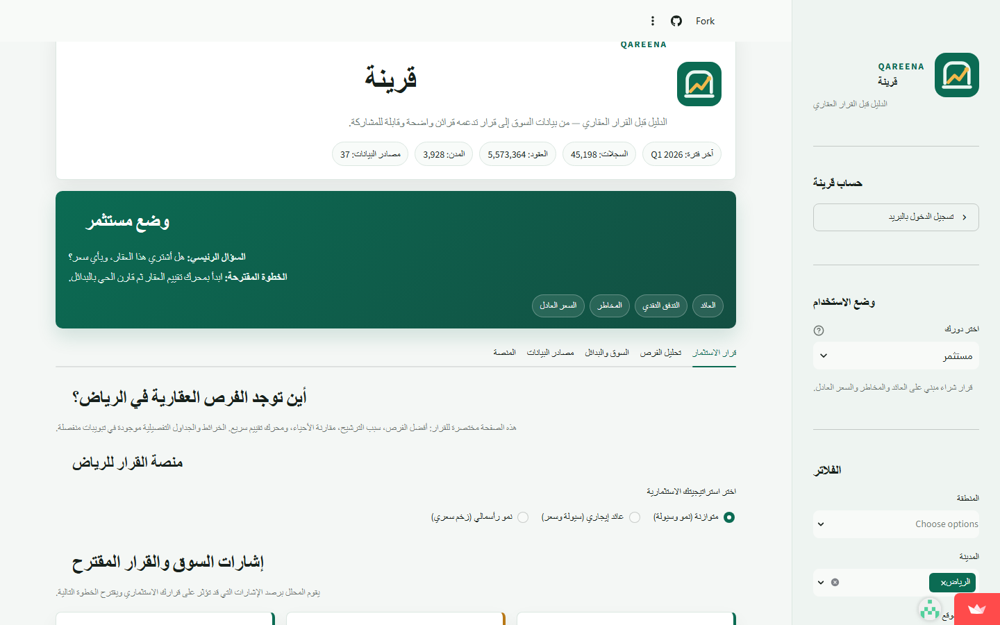

Case Study · Real-Estate Intelligence
Qareena turns open data into property decisions.
An Arabic-first decision-support platform that organizes official Saudi rental data into market signals, comparisons, forecasts, and practical next steps.
RoleProduct design, data engineering & development
ProductArabic web application
MarketSaudi rental intelligence
StatusLive product · 2026 Q1 data

01 · The challenge
Official market data existed, but a decision still required too much work.
Saudi rental datasets are distributed across many files and reporting periods. A user comparing neighborhoods must first discover the sources, normalize inconsistent structures, calculate indicators, and interpret the result.
The product challenge was to move beyond a descriptive dashboard and create a guided answer to a practical question: where are the stronger opportunities, and what should the user examine next?
Qareena was designed as a decision layer—not a replacement for professional valuation or legal due diligence. It makes official evidence easier to explore, compare, and act on.
02 · Current data reach
A publishable market snapshot with automated quality checks.
03 · What I built
One product spanning data acquisition, analysis, and the user decision.
Reliable data pipeline
Acquisition scripts collect official sources, standardize rental records, create a lightweight deployment snapshot, and reject stale or incomplete releases.
Decision analytics
Market scoring, neighborhood comparisons, property valuation inputs, scenario views, forecasts, and opportunity rankings translate raw rows into usable evidence.
Arabic product experience
An RTL interface combines investor modes, filters, concise explanations, saved workspaces, and an integrated real-estate analyst for guided exploration.
04 · Product flow
From public sources to a decision-ready screen.
- 01Acquire
Discover and retrieve official datasets from Saudi open-data sources.
- 02Standardize
Normalize locations, dates, property types, and market measures into one consistent model.
- 03Evaluate
Calculate market signals, comparisons, risk context, and forward-looking scenarios.
- 04Guide
Present the evidence through investor modes, opportunity views, maps, and clear recommended next steps.
05 · Engineering
A maintainable Python product designed for repeatable releases.
The repository separates acquisition, preparation, analytics, authentication, forecasting, reporting, and UI concerns. A scheduled GitHub Actions workflow checks for fresh market data each month, while release validation confirms that the application and its market coverage are ready to share.
Next case study